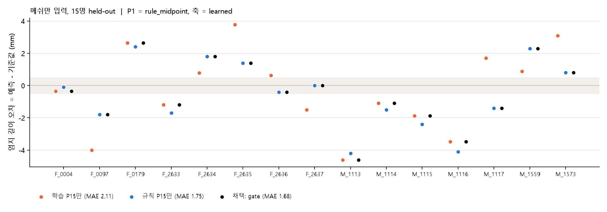
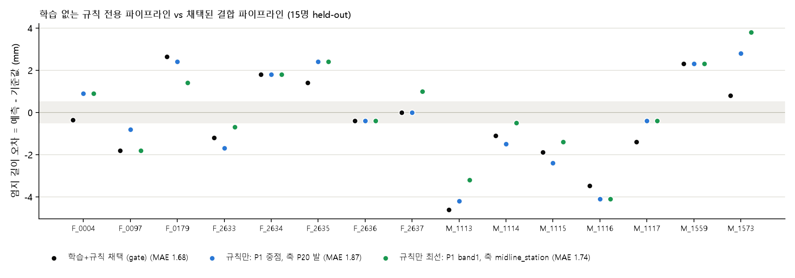
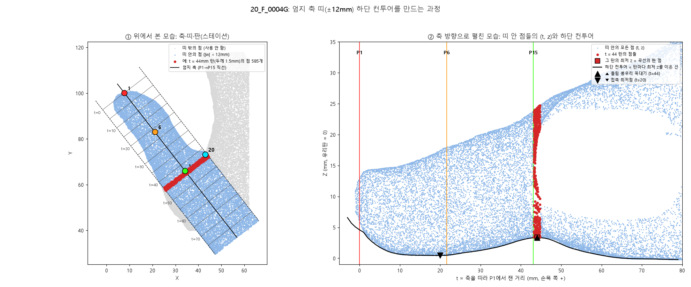
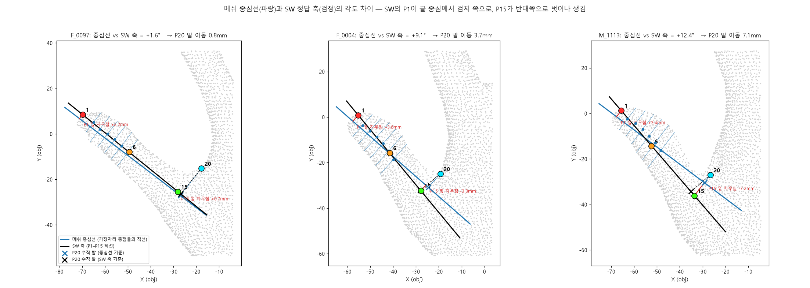
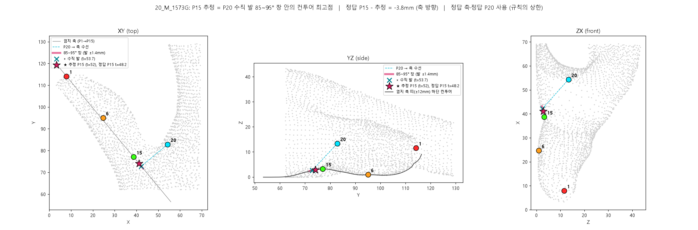

손 3D 메쉬(obj) 하나만 넣으면 P1(엄지 끝)과 P15(엄지 밑 기준점)을 찍고, 두 점의 xy 평면 거리 = 엄지 길이를 내는 알고리즘입니다. 따로 만들었던 두 재료 — 학습 모델과 기하 규칙 — 를 하나로 묶었습니다. 실행: python thumb_model/predict.py hand.obj --mode combined
결과 (15명, 각자 처음 보는 손으로 평가). 엄지 길이 평균 오차 1.68mm(최대 4.6), 0.5mm 이내 3명, 1mm 이내 4명, 2mm 이내 11명. 학습 모델만 쓸 때(1.95mm)보다 나아졌지만 목표 0.5mm에는 미달입니다. 두 재료의 P15 오차가 사람별로 같은 방향으로 틀리기 때문(상관 0.73)에 결합의 이득이 제한적입니다.
메쉬의 각 점마다 "주변 모양" 특징 32개를 계산하고, 15명 정답으로 "이 점은 P15에서 몇 mm 떨어져 있나"를 예측하도록 학습시켰습니다(부스팅 트리). 예측 거리가 가장 짧은 점들을 모아 대략의 위치를 잡고(coarse), 그 근처에서 다시 정밀하게 잡고(fine), 마지막으로 다른 사람들의 정답 주변 조각을 이 손에 맞춰 붙여 보정합니다(atlas). P1은 엄지 축 방향으로 가장 먼 점(apex)으로 잡습니다.
지금까지 성능(15명 각각을 학습에서 빼고 예측): P15 축 방향 편차 ±2.5mm, 엄지 길이 평균 오차 2.10mm.
특허(KR 10-1217207)의 방식을 재구성한 것입니다. 엄지와 검지 사이 오목한 곳(P20, 실루엣에서 잘 잡힘)을 엄지 축에 수직으로 내린 자리가 P15의 기준이 되고, 그 자리 앞뒤 약 1mm 안에서 손바닥 밑면이 유리에서 가장 많이 뜬 점을 P15로 고릅니다.
정답 축·정답 P20을 넣었을 때 P15 편차 ±2.1mm(최대 3.8). 메쉬만으로 돌리면 P20과 축의 재구성 오차가 조금 더해집니다.
obj의 정점(약 1.6mm 간격)에 표면 샘플(1mm²당 4개)을 더해 촘촘한 점구름을 만듭니다. 이후 모든 계산은 이 점들로 합니다.
손목 중심에서 방사형으로 훑어 실루엣(외곽선)을 얻고, 튀어나온 곳 5개 = 손가락 끝, 사이의 들어간 곳 = 손가락 사이 오목점. 엄지–검지 오목점이 P20입니다(xy 오차 약 1.5mm).
엄지의 기하학적 중심선을 만들고 그 끝(apex)과 손 좌표계에서 y가 가장 큰 점의 중점을 P1로 둡니다. SW의 P1이 중심선 끝에서 검지 쪽으로 약 2.8mm 치우쳐 있다는 관찰에서 나온 규칙이며, 상수 보정 없이 xy 오차 1.25mm입니다.
P1을 지나는 직선이 필요합니다. 후보 네 가지(P1 → 학습 P15 직선 / 중심선과 평행 / 중심선 위 P20 발로 / 중심선 자체)를 15명 검증으로 비교한 결과 P1 → 학습 모델의 P15 직선이 SW 축과 0.2 ± 1.3°로 가장 가까웠습니다(중심선은 5 ± 3°). 학습 모델이 P15의 옆 방향 위치를 잘 잡는다는 뜻입니다.
축을 따라 1mm마다 축 주변 ±12mm 안 점들 중 가장 낮은 z를 이어 "손바닥 밑면이 얼마나 떠 있나" 곡선을 만듭니다. P20을 축에 수직으로 내린 자리 ±1.1mm(각도로 85~95°) 안에서 이 곡선이 가장 높은 점 = 규칙 P15.
저장된 모델(model_hgb.pkl)로 coarse → fine → atlas 순서로 P15를 예측합니다.
후보 방식(학습만 / 규칙만 / 가중 평균 / 게이트 / 선형 결합)을 15명 검증으로 비교해 게이트를 채택했습니다: 축 위에서 학습 P15와 규칙 P15가 1.0mm 이내면 학습 값을, 더 벌어지면 규칙 값을 씁니다(문턱은 0.75~2mm에서 결과가 거의 같아 해석이 자연스러운 1.0mm로 고정). 규칙만 쓴 경우(1.75mm)와의 차이는 우연 범위이며, 매개변수가 없는 규칙만 쓰는 것도 합리적인 선택입니다.
길이 = P1과 P15의 xy 거리. 좌표(obj 좌표계), 길이, 확인용 PLY 파일을 냅니다. predict.py --mode combined로 호출.
LOO(leave-one-out): 15명 중 한 명을 빼고 나머지 14명으로 모델·가중치를 정한 뒤 뺀 사람을 예측합니다. 15번 반복하면 15명 전원이 "처음 보는 손"으로 평가됩니다. 가중치나 문턱값 같은 선택도 이 안에서만 정합니다(바깥 사람의 정답을 보지 않음).
| 지표 | 학습 모델만 (이전) | 최종 파이프라인 (결과) |
|---|---|---|
| P1 xy 오차 | 약 2mm (학습 apex) | 1.11mm (중점 규칙) |
| 엄지 축 각도 오차 | — | 0.2 ± 1.3° |
| P15 축 방향 편차 (sd) | 2.34mm | 1.84mm |
| 엄지 길이 평균 오차 (15명) | 1.95mm | 1.68mm (최대 4.6) |
| 0.5 / 1 / 2mm 이내 인원 | 2 / 6 / 9 | 3 / 4 / 11 |

학습 모델을 아예 빼고 규칙만으로 같은 일을 하는 모드도 있습니다(predict.py --mode rule, 설정은 final_config_rule.json, 모델 파일 불필요). 3·4단계만 다릅니다.
| 지표 (15명 held-out) | 결합 파이프라인 (채택, gate 1.0mm) | 규칙 전용 (학습 없음) |
|---|---|---|
| P1 xy 오차 | 1.11mm | 1.41mm |
| 엄지 축 각도 오차 | 0.2 ± 1.3° | 0.6 ± 2.6° |
| P15 축 방향 편차 (sd) | 1.84mm | 2.02mm |
| 엄지 길이 평균 오차 | 1.68mm (최대 4.6) | 1.74mm (최대 4.1) |
| 0.5 / 1 / 2mm 이내 인원 | 3 / 4 / 11 | 3 / 6 / 10 |

읽을 때 주의: 두 모드의 차이(1.68 vs 1.74)는 우연 범위입니다. t를 20mm로 고정하면 1.61이 나오지만 15명 전체로 고른 값이라 낙관적이고, 정직한 수치는 1.74입니다. 규칙 전용은 매개변수가 t 하나뿐이고 모델 파일 없이 돌아 설명이 쉽다는 장점이 있습니다. 어느 모드를 기본으로 둘지는 아직 정하지 않았습니다(현재 기본값은 결합). 참고로 새 P1 띠 규칙을 결합 모드에 넣으면 1.51mm(4/7/10)까지 내려가지만, 195개 구성 중 최선을 고른 값이라 같은 낙관 편향이 있습니다.
P6(엄지 첫마디)로 축을 잡는 방법은 시도했으나 규칙이 되지 않았습니다. 바닥에 닿기 시작하는 지점, 곡률, 그리고 타이어 접지면처럼 바닥에서 1mm 이내 점들의 면(접촉 패치)의 가장자리·중심·폭 변화까지 시험했지만 어느 정의든 정답 P6와 ±2.5mm이고 손마다 계통적으로 어긋납니다(그림: report/contact_patch/). 또 SW의 P6는 P1–P15 직선 위 거의 정확히 중간(0.49 ± 0.03)에 있어 P15를 찾는 데 새 정보를 주지 않습니다.
P15는 유리판에 눌린 평평한 손바닥 위에 있어 메쉬에 모양 단서가 거의 없습니다. 어떤 방법을 써도 같은 사람들(0097, 1113, 1573 등)이 같은 방향으로 3~5mm 틀리는데, 이는 노이즈가 아니라 SW가 우리 메쉬에 없는 정보(원본 고해상도 스캔의 주름, 텍스처, 또는 비공개 상수 규칙)를 썼다는 뜻입니다. 특허가 공개돼 있으므로 공급사에 기저점 정의를 문의하는 것이 가장 확실한 길입니다.



관련 파일: thumb_model/rule_pipeline.py(외곽선·P20·중심선), thumb_model/train_eval.py·model_hgb.pkl(학습 모델), thumb_model/thumb_views.py(컨투어), thumb_model/p15_foot_window_views.py(규칙 P15). 구현 예정: thumb_model/final_pipeline.py, predict.py --mode combined.